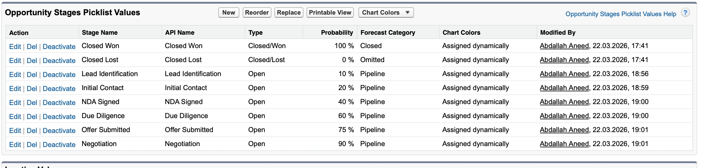
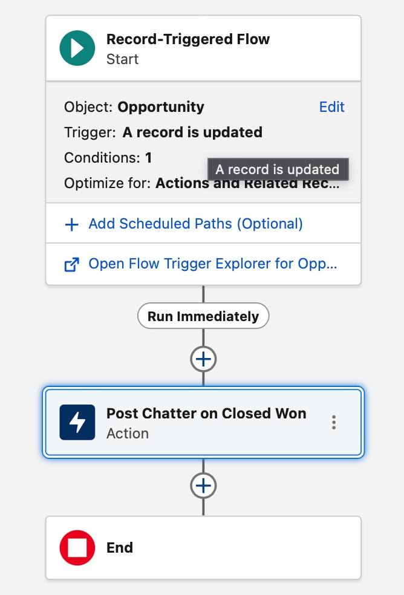
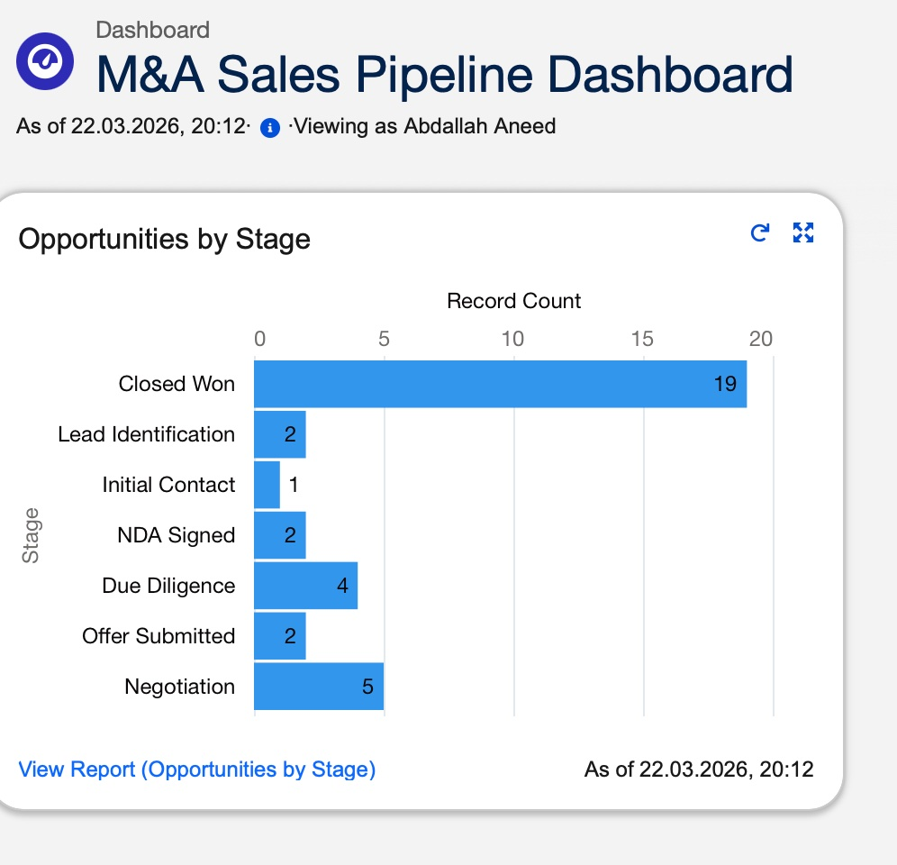

Projekt
Salesforce CRM
Konfiguration — M&A
Kontext
Aufgabe war es, Salesforce Lightning Experience für ein fiktives M&A-Beratungsunternehmen vollständig zu konfigurieren. Das Standardsystem war nicht auf die Anforderungen komplexer Deal-Prozesse ausgelegt — generische Phasen, keine Automatisierung, keine Pipeline-Übersicht.
Ziel: Eine einsatzbereite CRM-Umgebung, die den realen M&A-Deal-Lifecycle abbildet, interne Kommunikation automatisiert und dem Sales-Team eine klare Sicht auf die Pipeline gibt.
Was ich gebaut habe
Custom Opportunity Stages
8 branchenspezifische Deal-Phasen mit realistischen Wahrscheinlichkeitswerten (10 % – 100 %) — von Lead Identification bis Closed Won. Konfiguriert über den Salesforce Picklist Editor.
Chatter Flow Automation
Record-Triggered Flow, der automatisch eine Chatter-Benachrichtigung auf dem Opportunity-Datensatz postet, sobald ein Deal auf Closed Won gesetzt wird. Verhindert Duplikate durch die Bedingung „nur bei Änderung auf Closed Won".
Sales Pipeline Dashboard
Live-Dashboard mit Balkendiagramm (Opportunities by Stage), gespeist von einem eigens erstellten Salesforce-Report. Zeigt die Deal-Verteilung über alle Pipeline-Phasen in Echtzeit.
Sicherheitskonzept
Dokumentation und Analyse relevanter Salesforce-Sicherheitsmechanismen für das M&A-Umfeld: Profiles & Permission Sets, Role Hierarchy, Field-Level Security, MFA sowie Login IP Ranges.
Konfiguration im System
01 — Opportunity Stages Picklist · modifiziert von Abdallah Aneed

Die "Modified By"-Spalte zeigt Abdallah Aneed mit Zeitstempel — direkter Nachweis der Konfiguration. 8 M&A-spezifische Phasen mit individuellen Wahrscheinlichkeitswerten.
02 — Record-Triggered Flow · Chatter Automatisierung

Flow-Canvas mit Trigger (Opportunity aktualisiert), Bedingung (Stage = Closed Won) und der "Post Chatter on Closed Won"-Aktion. Kein Code — vollständig über Flow Builder konfiguriert.
03 — M&A Sales Pipeline Dashboard · Live-Ansicht

"Viewing as Abdallah Aneed" im Header — das Dashboard zeigt die Verteilung aller Opportunities über die konfigurierten M&A-Phasen in Echtzeit.
Erkenntnisse